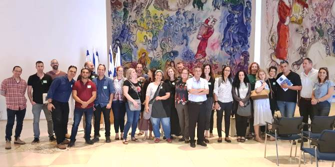

Making conscious and precise decisions is a substantial and significant component of any act of leadership, and has a decisive impact on the results of the act. Mandel graduates hold key positions in many organizations and lead many innovative enterprises, and thus are often required to deal with challenges that put their decision-making capabilities to the test.
During a two-day seminar conducted as part of the continuation program for Cohorts 24 and 25 of the Mandel School for Educational Leadership, the graduates were introduced to theoretical and practical aspects of decision-making, heard leading figures discuss significant decisions they made in their professional lives, and examined stories of success and failure together with those leaders. They explored rational versus intuitive decision-making; decisions made in conditions of uncertainty and danger versus decisions made in situations with no constraints or limitations; and the moral and ethical aspects of decision-making processes. The goal was to equip the graduates with knowledge and tools that will support their decision-making processes in the future.
Vision-Based Decision-Making Processes

The seminar began with a site visit to the Knesset Research and Information Center, which provides Knesset members with reliable and objective professional information as the basis for discussion and decision-making. The graduates then visited the Jerusalem Magistrates’ Court to meet with Justice David Shaul Gabai Richter, who spoke with them about ethics, values, and justice, and about decision-making processes in court. In the evening, a group session gave the graduates an opportunity to share and discuss their professional dilemmas and significant decisions they have taken.
On the second day of the seminar, the graduates met with two pilots who presented the Israeli Air Force's model of review, evaluation, and decision-making, and who shared examples of situations in which they were required to make decisions in complex circumstances.
To conclude the seminar, the graduates participated in a workshop entitled “Between Cognition and Intuition: The Psychology of Decision-Making,” led by Professor Shahar Ayal, head of the master’s program at the Baruch Ivcher School of Psychology at the Interdisciplinary Center (IDC) Herzliya, and by Anat Halevy, the co-founder and CEO of IDeCision, the applied center for decision-making at IDC Herzliya.
The summer seminar was led by Sharona Bar-Nes, senior staff member at the Mandel Graduate Unit, and Dr. Yehuda Mimran, consultant to the Unit.
{kind=link}